Sitemap
I started the responsive design by planning the information architecture of the website. Creating a sitemap ensured new screens were placed in a flow that was intuitive and accessible. The sitemap provided a visual understanding of the navigational structure and what content and actions are shown for each page.

Responsive Design
After building the informational architecture I crafted digital wireframes with responsive design to provide an optimal viewing experience on screens of different sizes. The aim was to create responsive pages that look great on desktop, mobile, and tablet devices.
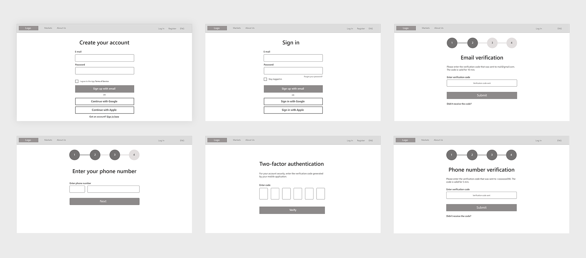
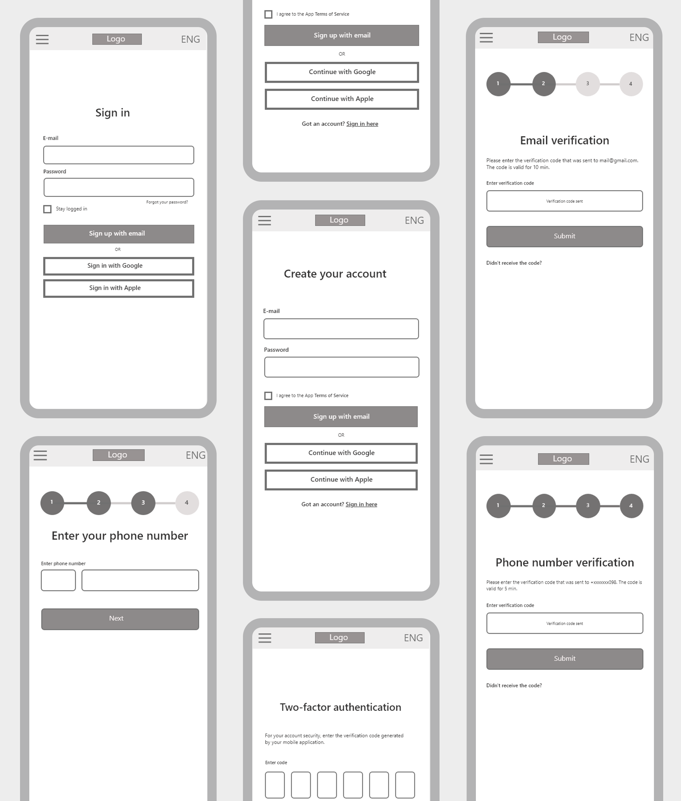
Style Guide
To establish a consistent look throughout the digital experience, I created a sticker sheet including primary and secondary colors, button components, icons, and selected typography for body text and headings.
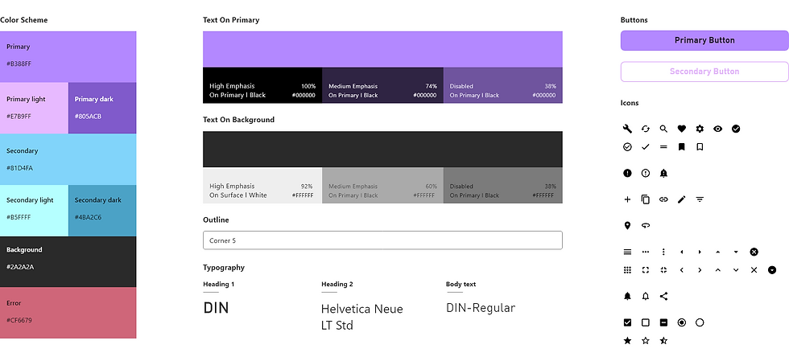
Mockups
Sign-in screen
The login screen would require a user to fill out a simple form to access the account. For extra protection of sensitive information, I added two-factor authentication.
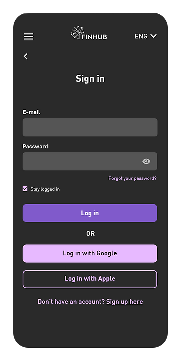
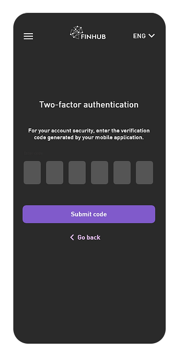
Create account
Users would fill out a simple sign-up form to create a new account. I included the progress bar so users can understand how many steps they would need to take to finish the task.
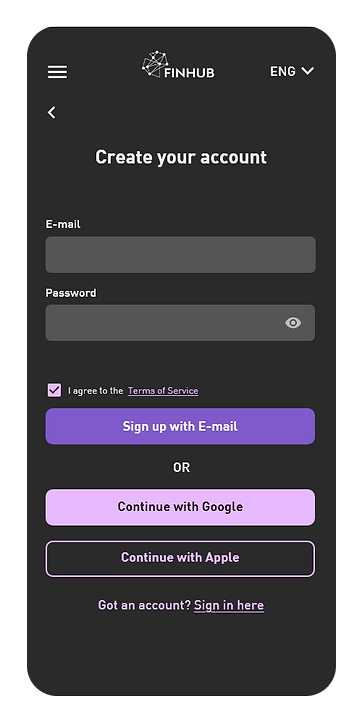
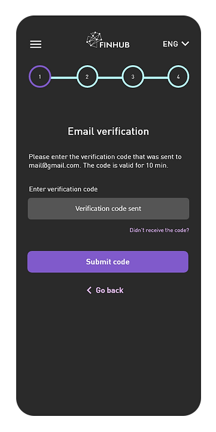
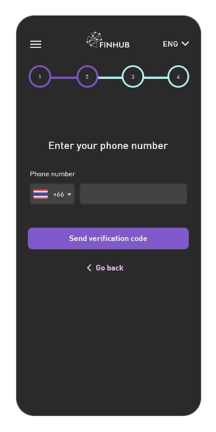
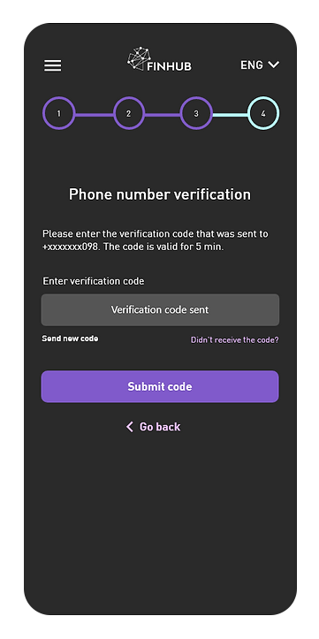
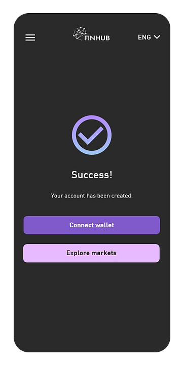
Wallets
For the wallets page, I prioritized sections with assets and a timeline and included a visual diagram showing the investment portfolio with a constantly updated USD worth of the portfolio and its 24-hour change.

Screens for Web
For the wallets page, I prioritized sections with assets and a timeline and included a visual diagram showing the investment portfolio with a constantly updated USD worth of the portfolio and its 24-hour change.
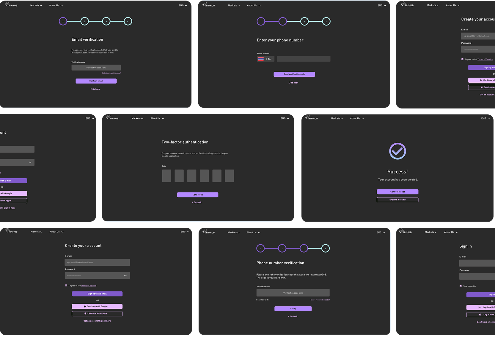
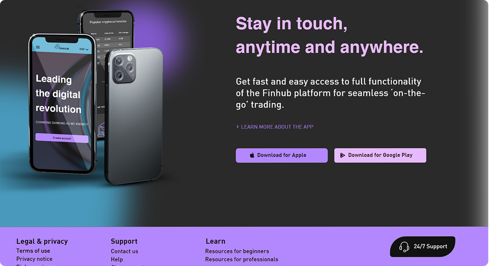
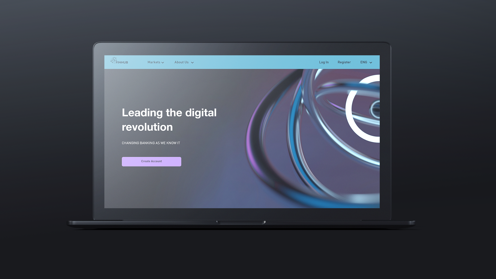